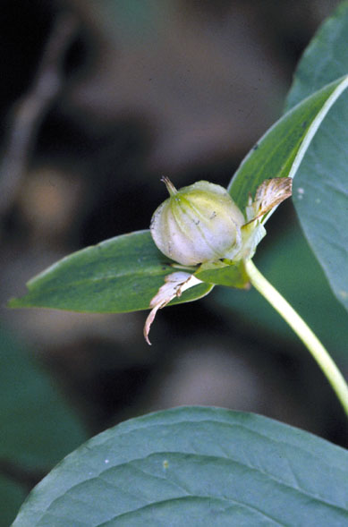
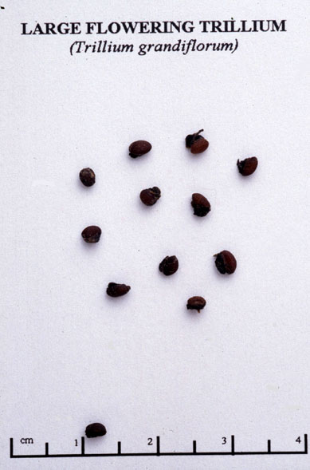

Trillium Grandiflorum
Family: Liliaceae
Large Flowered Trillium
Swink/Wilhelm #8

Click to view larger photo
FLOWERING: Mid-April to May
SEED TIMING: Early July
HABITAT: Moist woods
DIAGNOSTIC FEATURES: Grows 8 to 18 inches high. One large, white flower on an erect stalk above a whorl of 3 broad leaves, turns pinker with age.
TO PICK: One dry berry, angled, up to 1 inch in diameter forms at the end of a stalk in the middle of 3 green sepals. The berry rolls off plant easily when pinched or pushed. Seeds inside are reddish brown and are surrounded by a sticky caruncle. Do not allow to dry out while storing.